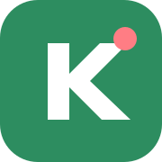

Đang chỉnh: chưa chọn nguồn
Kích thước: 1280 × 720
Chọn nhanh theo nơi anh dự định đăng video.
Mặc định đã tối ưu cho video hướng dẫn desktop.
Chỉ nhập khi anh hiểu codec MediaRecorder.
Mỗi đoạn ngắn là một bước. Nhấn Space để chuyển câu khi chạy.
~ đầu dòng: ghi chú sân khấu · / đầu dòng: ghi chú nội bộ, không đọc.
Quy trình ngắn nhất để quay một video hướng dẫn.
F9 bắt đầu/dừng quay trong Kanrecode · Ctrl+Shift+F9 khi đang ở Excel/MISAF10 tạm dừng/tiếp tục trong Kanrecode · Ctrl+Shift+F10 toàn WindowsCtrl+Shift+D bật/tắt bút vẽCtrl+Shift+K bật/tắt hiển thị phímCtrl+Shift+R chọn vùng quayCtrl+Shift+J zoom thủ côngAlt+Z/Y/X hoàn tác/làm lại/xóa nétSpace chuyển Teleprompter
1080p · 30 FPS · 8–12 Mbps phù hợp phần lớn video hướng dẫn. Auto zoom hoạt động tốt nhất khi quay toàn màn hình. Với Desktop Helper, phím/click vẫn được nhận khi anh đang thao tác Excel/MISA.
Kanrecode được phát triển từ SC Screen Recorder của Rik Roots, dùng giấy phép MIT. Bản ghi được xử lý cục bộ; riêng tính năng xóa nền camera tải tài nguyên MediaPipe từ CDN.